приморский · коломяги
Комендантский, 65
Ultra City. Светлый зал, летняя веранда, пробежки Time4run по воскресеньям.
открыть картуподожди секунду
кофе уже на столе
доброе утро. Спешелти кофе, своя пекарня и завтраки — на районе. Зачем ехать в центр, если можно сделать кусь у дома.
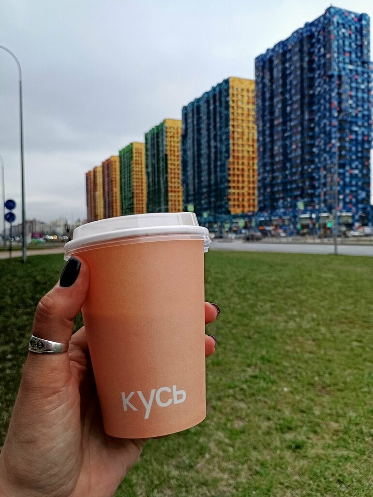
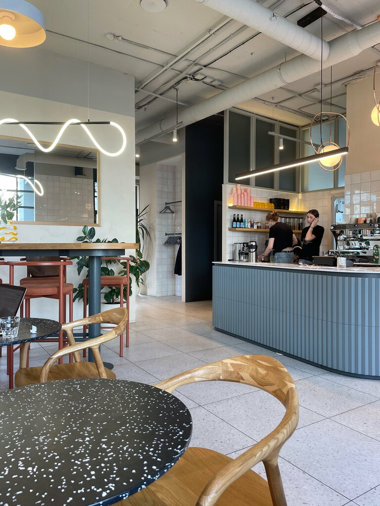
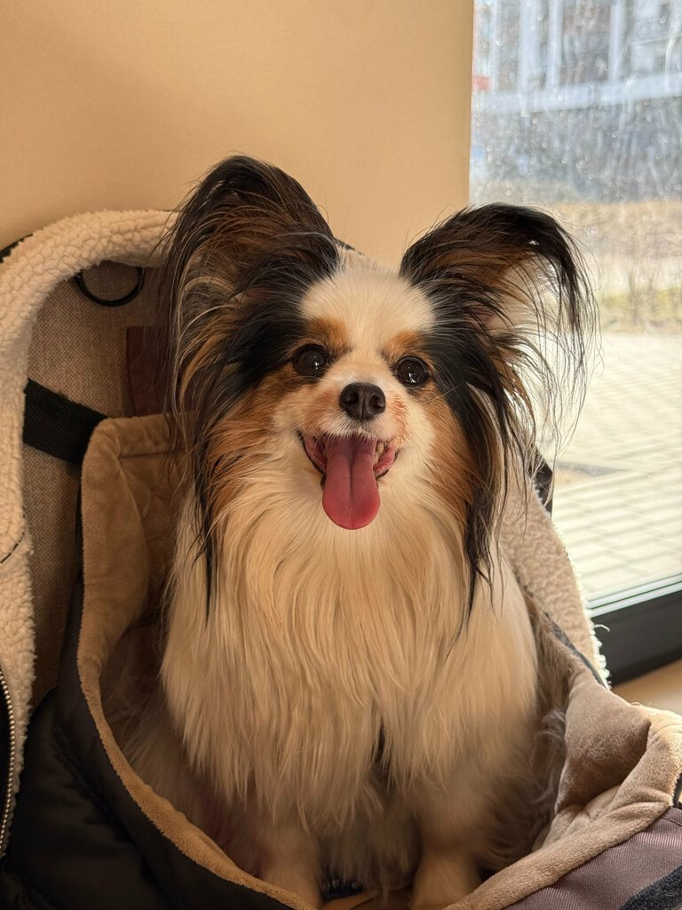
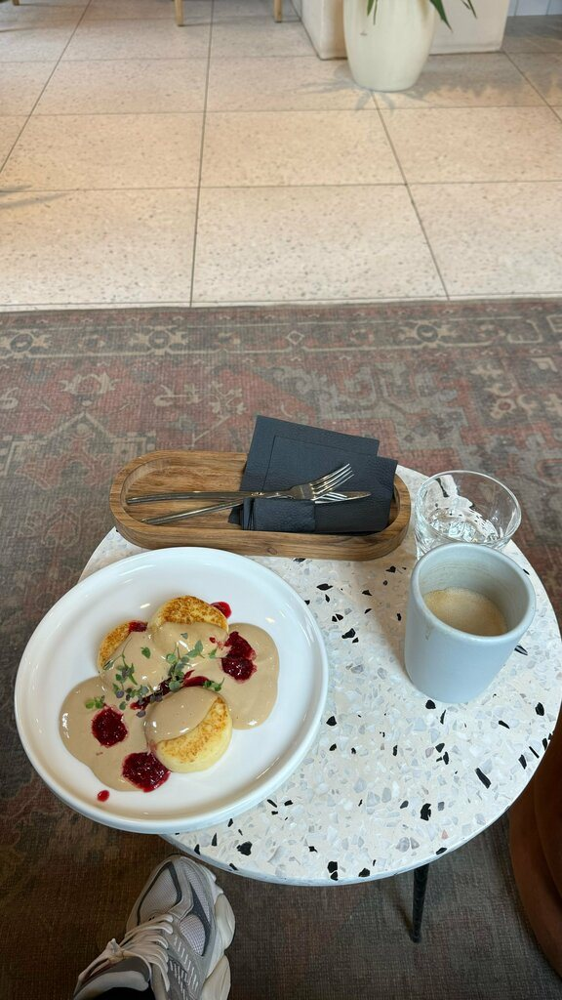
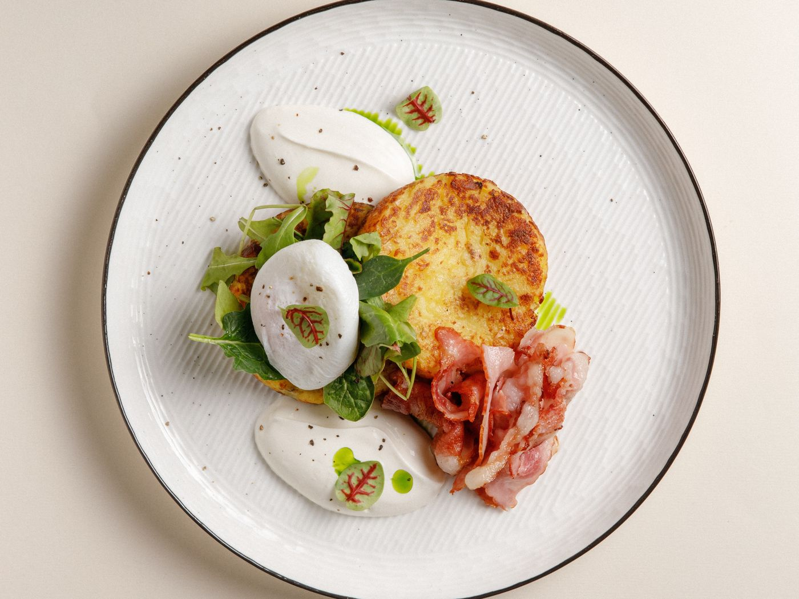
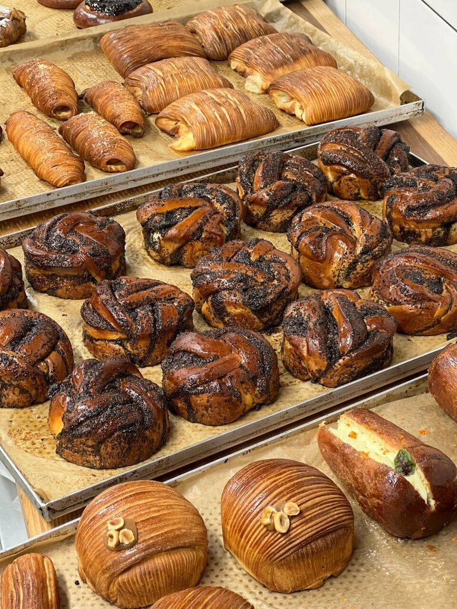
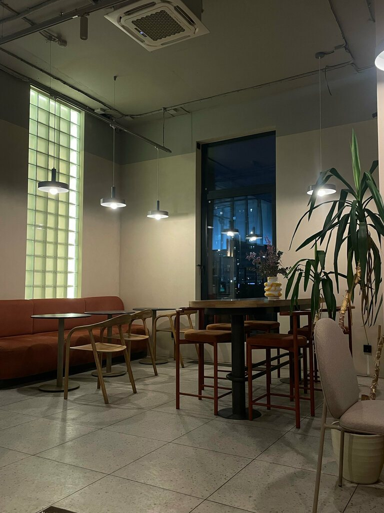
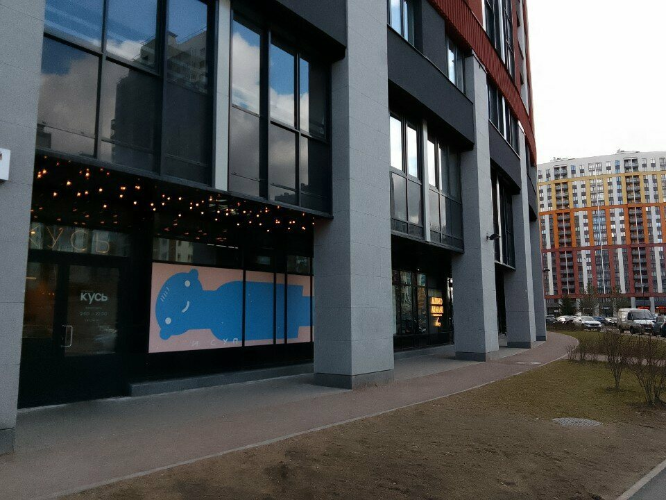
первая чашка
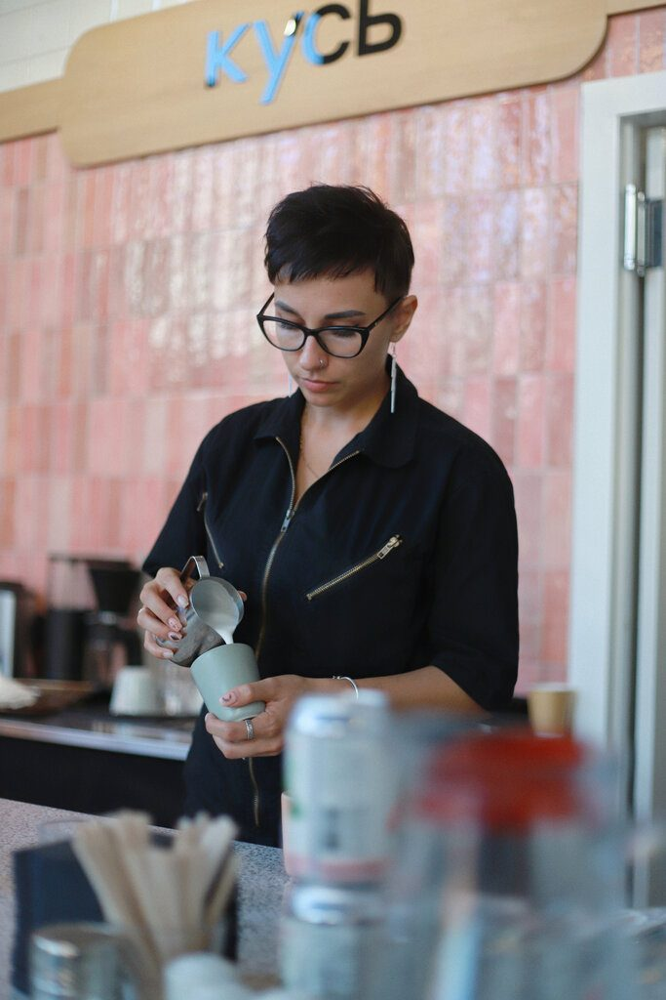
Двери в 9:00. Пахнет круассанами и эспрессо. Если пришёл с хвостом — тебе тоже нальют воду и найдут место у окна.
круассан · капучино · тихий залГости приходят с собаками так же спокойно, как с ноутбуком. Для людей — розетки, вайфай и диван у окна. Летом ещё и столики на улице.
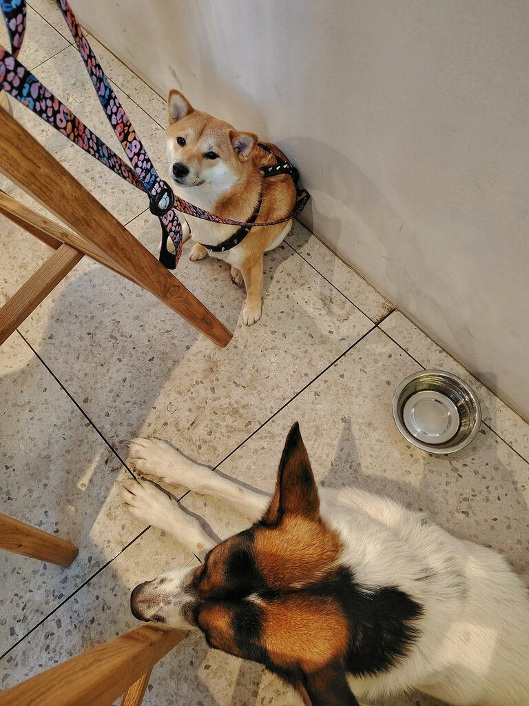
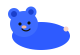
Настоящие отзывы с Яндекс Карт. Записку можно подвинуть.
все 290 отзывов на картах →Кусь открывается в новых районах Петербурга — там, где не хватает хорошего кофе и нормального зала. Бронь столов по одному номеру.
+7 981 983-51-97приморский · коломяги
Ultra City. Светлый зал, летняя веранда, пробежки Time4run по воскресеньям.
открыть картукалининский
Первый дом сети. Завтраки здесь до 13:00. Рядом Гражданский проспект.
открыть карту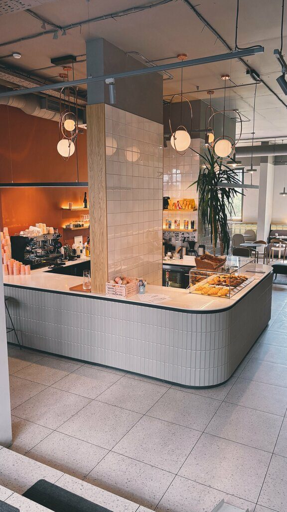
московский · звёздная
ЖК Триумф Парк. Год кафе, винил и игристое по особым вечерам.
открыть картубронь столов · напиши или позвони
доставка с Комендантского и Среднерогатской — через Яндекс Еду
Made by ilyalycha